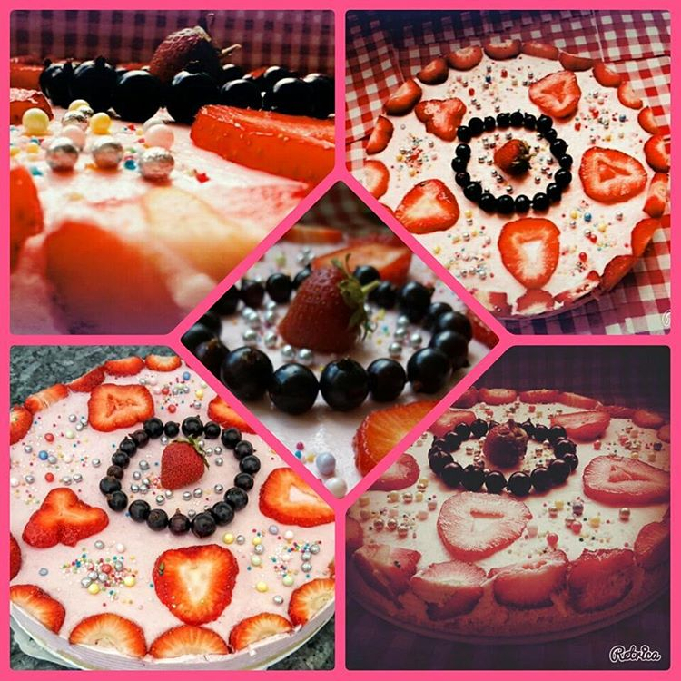

Welkom op liannascakes.nl!
Op deze website is het mogelijk om cakes te bestellen en al mijn cakes te bekijken. Je kan alle foto's bekijken, contact met me opnemen en ook de laatste nieuwtjes bekijken van mijn website.





Op deze website is het mogelijk om cakes te bestellen en al mijn cakes te bekijken. Je kan alle foto's bekijken, contact met me opnemen en ook de laatste nieuwtjes bekijken van mijn website.